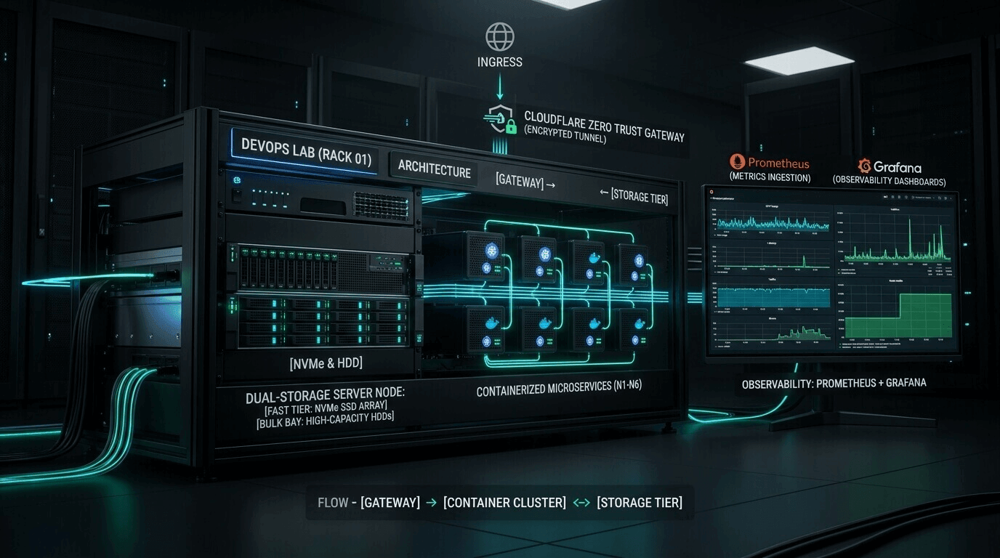

Personal Homelab &
DevOps Infrastructure
Production-grade, category-wise modular self-hosted infrastructure optimized for dual-storage tiering, automated database healthchecks, nightly snapshot replication, and Cloudflare Zero Trust ingress.

Dual-Storage Tiering Architecture
Workloads are strategically partitioned between fast NVMe SSD storage for low-latency databases and high-capacity magnetic HDD for bulk media and backups.
Tier 1: Fast NVMe SSD Storage
/home/maruf/homelab/volumes
Dedicated to high-frequency transactional database writes, in-memory caches, Git repositories, and application state.
- Leantime MariaDB 11 volumes/leantime/mysql
- Maybe PostgreSQL 15 & Redis volumes/maybe/{postgres,redis}
- Forgejo Git Repositories volumes/forgejo
Tier 2: Bulk HDD Storage
/home/maruf/MyHDDStorage
High-capacity magnetic storage allocated for sequential streaming reads, long-term Prometheus TSDB retention, and nightly backup mirrors.
- Jellyfin Media Library Jellyfin/{Movies, TV, Music, Videos}
- Prometheus Metrics TSDB monitoring/prometheus
- Nightly Backup Archives backups/homelab_backup_*.tar.gz
Homelab Architecture A-Z Visualizer
Explore interactive visual flowcharts detailing Zero Trust edge ingress, smart dual-tier storage mounts, nightly automated snapshot recovery, and the complete system blueprint.
Users and automated clients connecting via public DNS domains over strict TLS.
Zero Trust Access authentication, DDoS mitigation, and outbound tunnel encapsulation.
Systemd host daemon routes traffic into isolated Docker bridge. 0 open router ports.
Tier 1: High-Performance NVMe SSD
/home/maruf/homelab/volumes
Engineered for high-frequency ACID database transactions, in-memory caches, and application configurations.
Tier 2: High-Capacity Bulk HDD Bay
/home/maruf/MyHDDStorage
Allocated for continuous streaming media reads, Prometheus metrics time-series retention, and nightly backup tar archives.

Executes live transactional dump of Leantime tables.
Performs pg_dump on Maybe Finance ledgers.
Archives all SSD application state in read-only mode.
Bundles SQL dumps and configs into timestamped archive.
Mirrors archive to HDD storage and purges older backups.